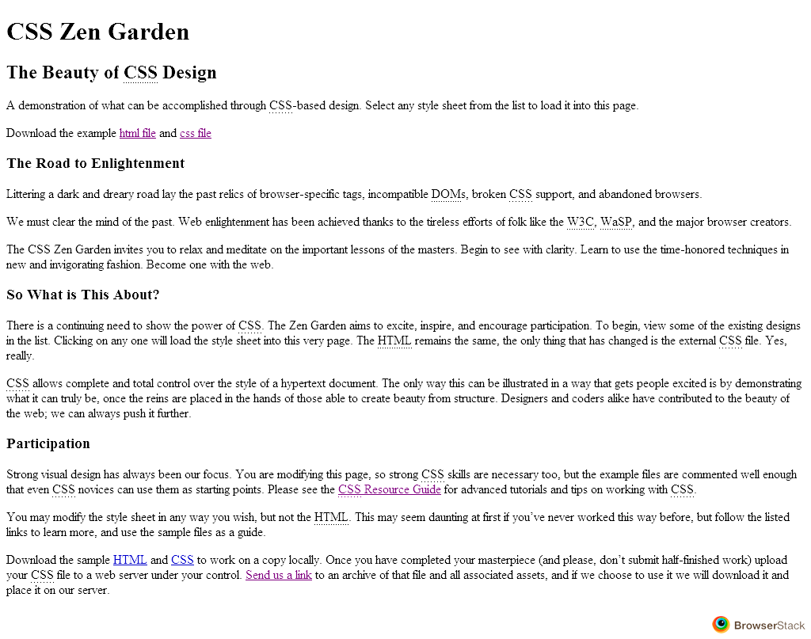
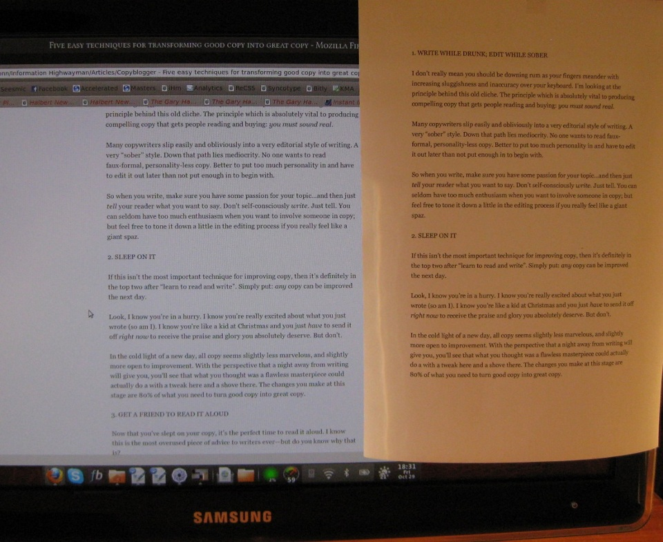

Let's talk CSS
css-demo.azurewebsites.net
github.com/johnnybegood/10-CSS-Knows
A lot has changed in the last 10 years
What we've learned along the way
Ten knows about CSS
#1 - Every browser has a built in stylesheet
HTML
WIN 7 - IE 8
WIN 7 - Firefox 20
WIN 7 - Chrome 27
WIN 7 - Opera 12.14

WIN 8 - IE 10
OS X Mountain Loin - Safari 6
Small differences = huge pain
CSS
#2 - Vertical Rythm
CSS
CSS
#3 - Size is relative
Absolute sizing
Pixels (px)
Centimeters (cm)
Milimeters (mm)
Inch (in)
Points (pt)
Relative sizing
Percentage (%)
(R)EM
Equal to the computed value of the inherit
font-size
property
CSS
#4 - It can write
CSS
CSS
With this power comes great responsibility
#5 - The 16px default

16px = ±12pt
CSS
#6 - Living outside the box
CSS
CSS
CSS
#7 - Grids
Common grid frameworks
Grid 960
Blueprint
Twitter bootstrap
CSS
#8 - OOCSS
One html page - multiple styles
CSS
This practice
hurts
more than it gains
Make objects and building blocks
CSS
#9 - Frameworks
Common css frameworks
Twitter bootstrap
Blueprint
YUI
Sencha
CSS
#10 - Compilers
Closing the gap
Variables
Functions / mixins
Nesting
Imports
...
LESS
CSS
And I haven't started on CSS3 yet ...
←
→
/
#